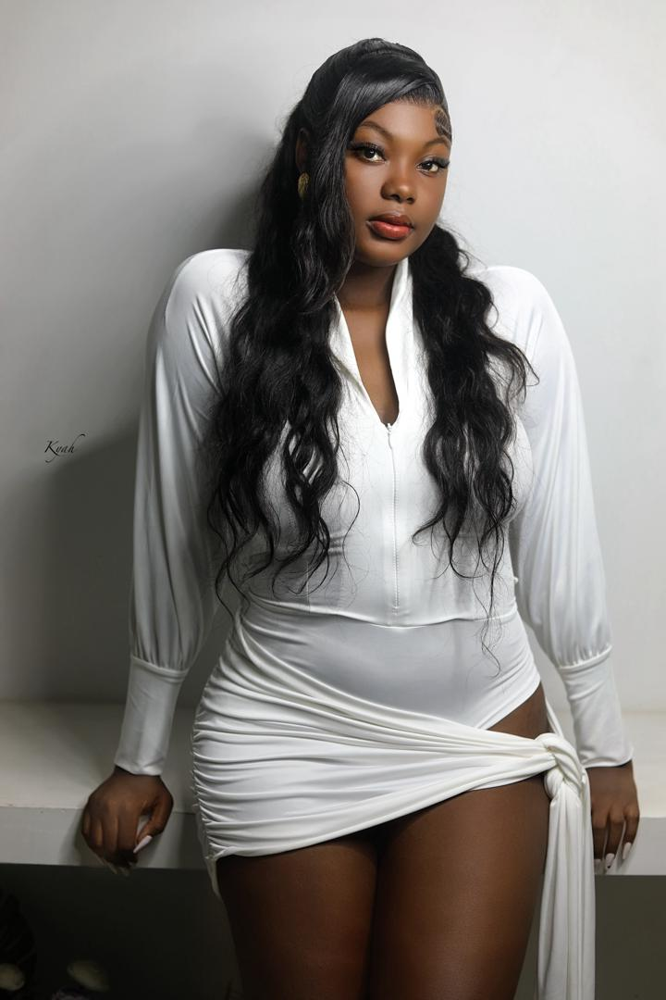
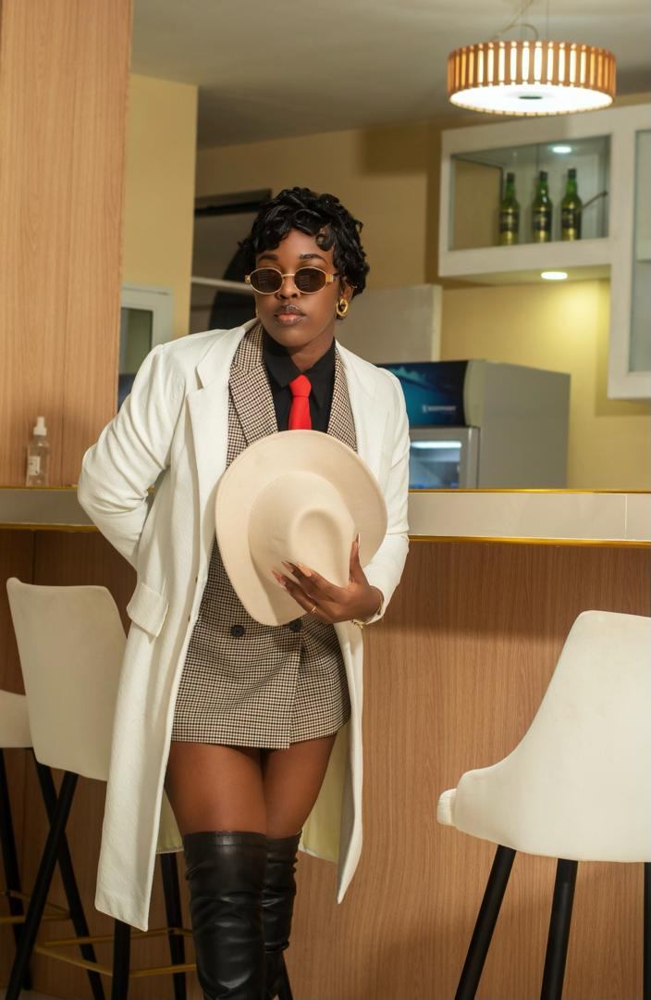

01 Studio photo · Haïti
Des moments
qui restent.
Je raconte votre histoire avec la lumière, le mouvement et l'émotion. Chaque photo est faite pour vous faire revivre l'instant.
 Port-au-Prince / 2024
Port-au-Prince / 2024
Chercher la lumière.
Garder le vrai.
Garder le vrai.
PORTRAIT✳MARIAGE✳ÉVÉNEMENT✳IDENTITÉ✳PORTRAIT✳MARIAGE✳
02 Mon travail
Découvrez ce que
nous créons.
Une sélection d'images tirées de quelques histoires que j'ai eu la chance de raconter.







 K /
K /PHOTO
STUDIO
03 Derrière l'objectif
Des photos avec
une âme.
Je suis K, une photographe qui aime les images authentiques. Qu'il s'agisse d'un mariage, d'un portrait ou d'un grand jour pour votre marque, je suis là pour observer les petits moments et les faire durer.
Mon travail mêle une direction simple à un regard toujours à la recherche du naturel.
Parlons de votre projet04 Créons ensemble
Vous avez une
histoire à raconter?
Écrivez-moi pour parler de votre projet, de la date et de toutes vos belles idées.
+509 46 95 58 19 hello@kyahphotographe.com